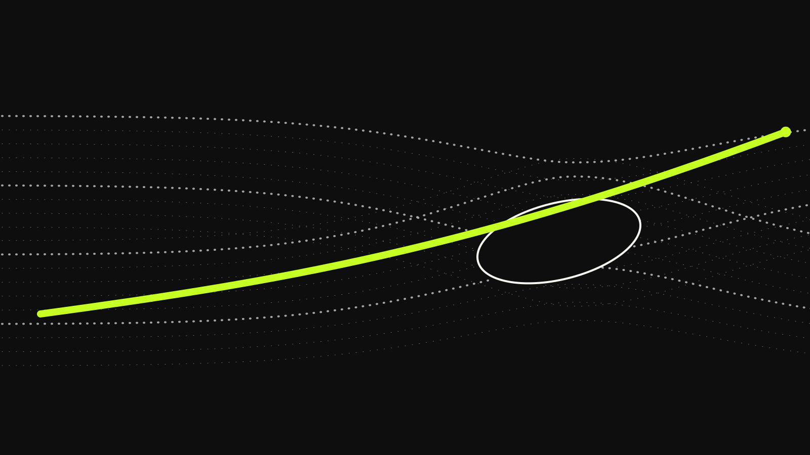
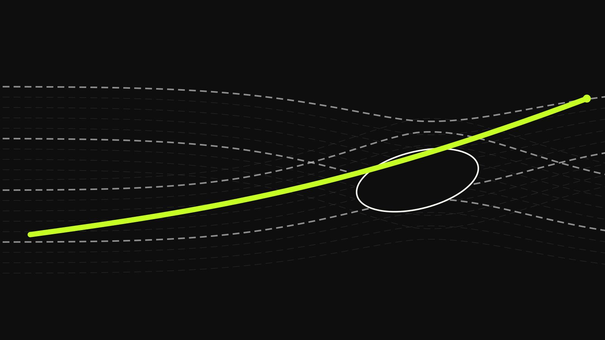
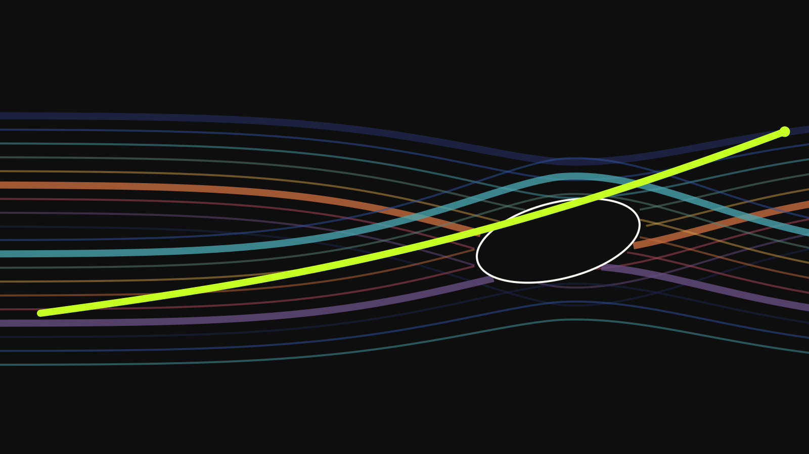

Bizarre Industries / Astronomical Atlas / PROVISIONAL v1 / NONPUBLISHABLE
Textures
The same physical field expressed through governed representation families.
Texture is a representation of the same governed field, not decoration and not a second accent system. Each sample below retains the provisional aperture lineage and synthetic source record.

2e5bfb31678771673a9ede8791f605ab21fba833de406e48d0db69f64dfbd79dsynthetic / derivative
139317530e061764c9c8b3339f395f5785478c577f740e12e24771a7bd491a85synthetic / derivative
8105397925fa8ceaaeb8c3f5a7d54a5aa986add138bb8887e1a179d924b99670synthetic / derivative